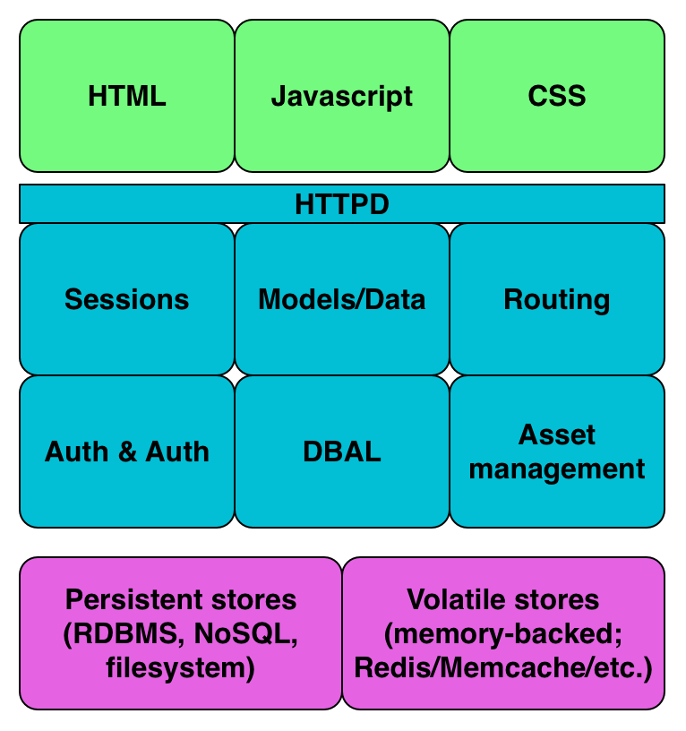
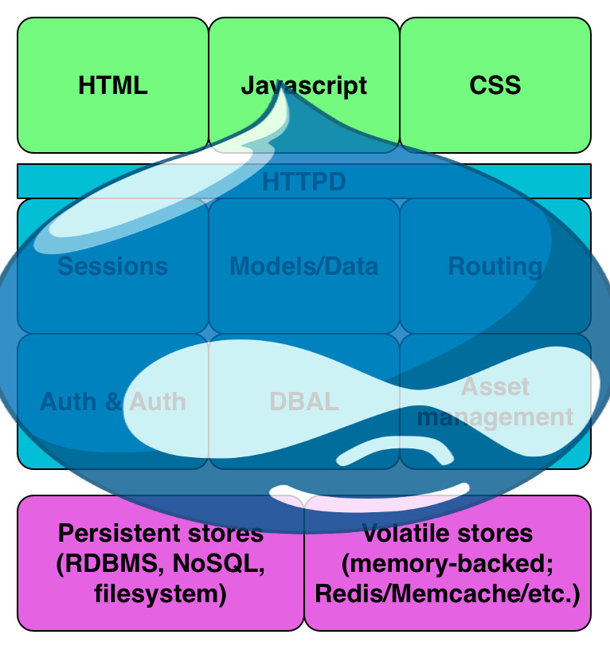

Tight Stack, Lazy Stack
Sam Boyer
@sdboyer
Me
Drupaller since 2008
Maintain[ed] a couple of very popular modules
Architect of the drupal.org Git hosting platform
Co-lead of a Drupal 8 initiative
Architect-y person with NBCUniversal
DevOps zealot
Nowadays, I do PHP, Go, Ruby, JS, and Python
And probably, a guy who really needs a break from Drupal
Drupal
13-year old PHP CMS/framlication
Old-school LAMP (mostly)
About 2% of all websites run it
Can run small to very big sites
Ginormous community
Drupal is, itself, a full stack application
But way more "lazy" than "tight."
OK, back up. Lazy stack? Tight stack?
Let's get meta!
PART ONE: KNOW YOUR USE CASE
"Full stack" starts long before bytes hit vim
There are approaches to this!
UX (kinda sorta)
Behavior-driven development
Content strategy
Domain modeling
Drupal has AAAALL its own words. Good luck modeling.
Content model is *really* flexible, though.
So, what is Drupal's use case?
PART TWO: LAYERS!
Full-stack-ish layers

Drupal's layers

Modules and hooks: Drupal's stack-smoosher
Lazy stacks create bizarre problems (and knowledge)
Drupal 8 improves some of this...
But we still really like letting everything bleed together.
All that said, lazy stacks can create interesting problems
SUSPECT YOUR STACK
Lazy vs. Tight